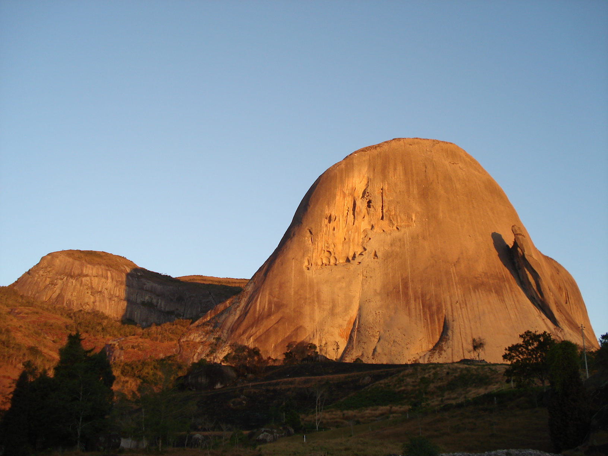

Destinos do Espírito Santo
Explore as maravilhas naturais e as cidades encantadoras do Espírito Santo. Conheça destinos únicos e descubra o que o estado tem a oferecer.
Pedra Azul
Pedra Azul é um dos principais pontos turísticos do Espírito Santo, com vistas espetaculares e opções de trilhas e ecoturismo.